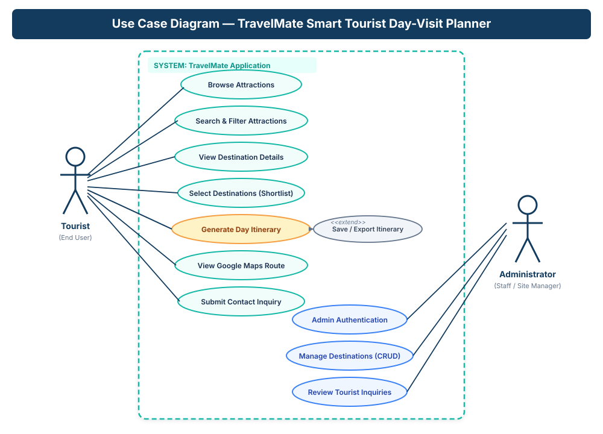
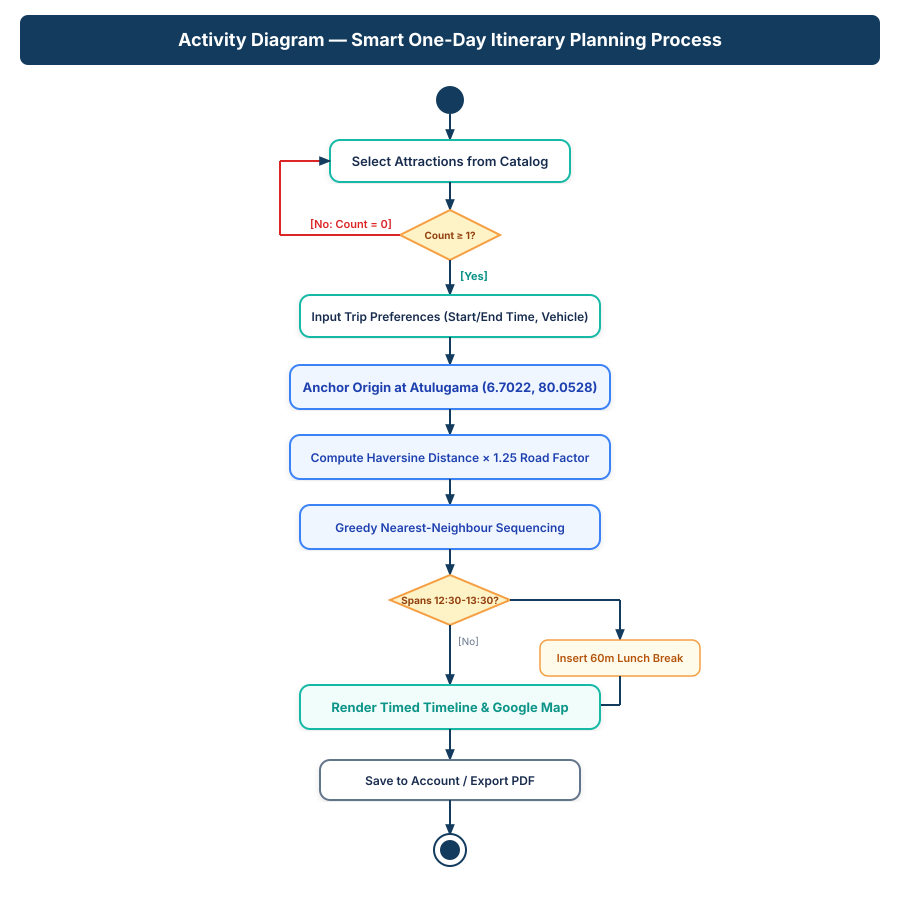
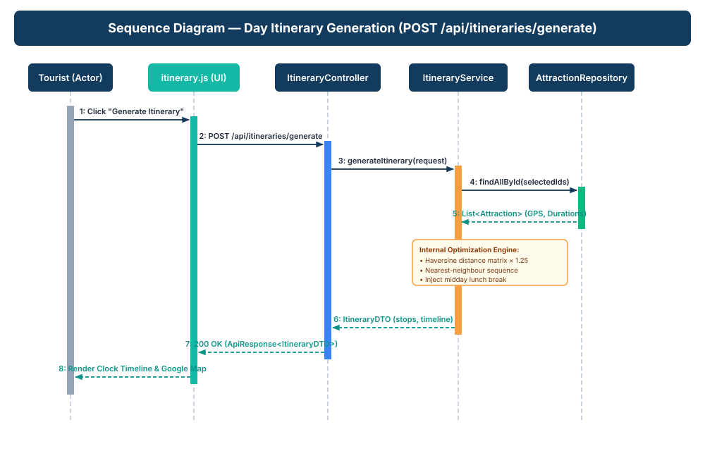
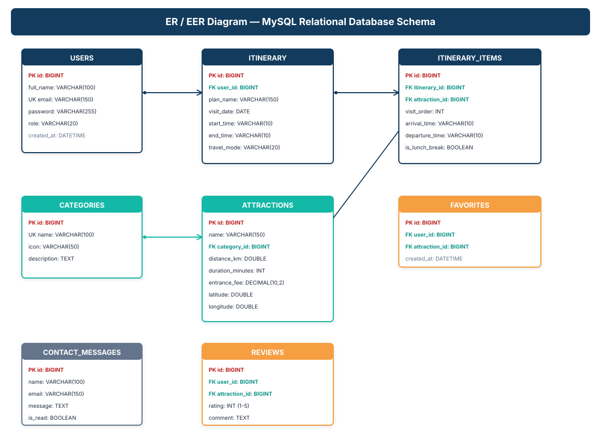

TravelMate — StarUML Design Models
Official design diagrams modeled in StarUML (v5.x / v6.x) for Course Module ITE2953 (Software Project). These diagrams align strictly with the implemented domain and correspond directly with Chapter 3 (System Analysis and Design) of the Final Project Report.
1. Use Case Diagram
Models functional boundaries, Tourist actor, and Administrator actor with role-gated capabilities.


Design Documentation for Report Chapter 3.2:
The Use Case Diagram establishes the system boundary for the TravelMate application. Two primary actors interact with the system: the Tourist (who browses destinations within 25km of Atulugama, applies multi-criteria filters, shortlists destinations, generates clock-timed itineraries, exports schedules, and submits inquiries) and the Administrator (who authenticates via BCrypt-secured login, accesses the KPI dashboard, executes CRUD operations on attractions and categories, and moderates tourist inquiries).
2. Activity Diagram (Itinerary Planning Process)
Flow of control from user input to nearest-neighbour route calculation, midday break injection, and schedule rendering.


Design Documentation for Report Chapter 3.3:
The Activity Diagram delineates the step-by-step workflow of the itinerary generation process. A decision node validates that the tourist has selected at least one destination. Once valid, preferences (Start/End times, Travel Mode) trigger the algorithm: anchoring origin at Atulugama, calculating the road distance matrix, sequencing stops using greedy nearest-neighbour logic, injecting a 60-minute lunch break if the tour spans 12:30 PM–1:30 PM, enforcing the finish-time boundary, and rendering the interactive timeline.
3. Sequence Diagram (POST /api/itineraries/generate)
Chronological message exchange between Tourist, Frontend UI, Spring Boot REST Controller, Service, and MySQL DB.


Design Documentation for Report Chapter 3.4:
The Sequence Diagram illustrates the synchronous and asynchronous HTTP message flow across the layered architecture. The client UI dispatches a POST /api/itineraries/generate request carrying destination IDs and timing constraints. ItineraryController validates the payload and invokes ItineraryService.generateItinerary(). The service queries AttractionRepository via JPA, executes the nearest-neighbour optimization algorithm, packages the resulting timeline into an ItineraryDTO, and returns an HTTP 200 OK wrapped in an ApiResponse<T> envelope.
4. Class Diagram
Object-oriented class hierarchy depicting entities, DTOs, controllers, methods, and relationships.

Design Documentation for Report Chapter 3.5:
The Class Diagram models the core domain and control structure. Domain entities (User, Category, Attraction, Itinerary, ItineraryItem, ContactMessage) represent data models with private fields and public accessor methods. Composition (*--) binds Itinerary and ItineraryItem, while associations link users to their day plans and categories to attractions. Layered REST controllers handle external HTTP requests cleanly decoupled from the entity models.
5. ER / EER Diagram (MySQL Relational Schema)
3NF normalized schema depicting tables, primary keys (PK), foreign keys (FK), and cardinality constraints.


Design Documentation for Report Chapter 3.6:
The Entity-Relationship Diagram outlines the 3NF normalized schema implemented in src/main/resources/sql/schema_and_seed_data.sql. It details 7 core tables: users, categories, attractions, itinerary, itinerary_items, favorites, reviews, and contact_messages. Primary keys, foreign key constraints with ON DELETE CASCADE, and unique indices (such as user email and category name) ensure referential integrity and eliminate orphaned child records.